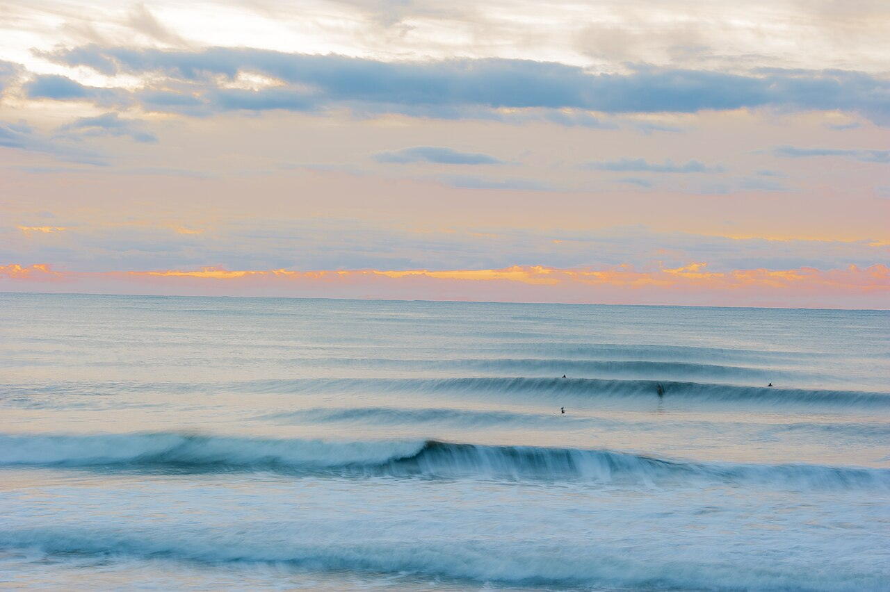

Ichinomiya — Chiba
Japon · surf, bodyboard

La plage de surf de la région de Tokyo, choisie pour les épreuves olympiques de 2021. Beach break régulier, très fréquenté le week-end.
- Lieu
- Japon
- Niveau
- Intermédiaire
- Activités
- surf, bodyboard
- Type d'eau
- Mer / océan
- Coordonnées
- 35.37, 140.38 (position approximative du secteur)
Dangers à connaître
- Affluence forte, priorité respectée.
- Courants de retour entre les bancs.
- Saison des typhons en fin d’été : houle et vent brutaux.
Le conseil d'Ocean Buddy
Le matin en semaine, tu as la plage presque pour toi.
Ouvrir dans Ocean Buddy Télécharger sur l'App Store
Source : Description historique Ocean Buddy · vérification externe en attente.